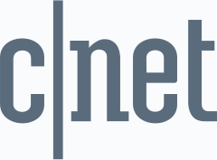

About
ITやライフサイエンス分野での事業立ち上げ。研究開発・製品開発から経営までを手がける。創業した医療・バイオのディープテック企業では、基礎研究（独自開発の小型バイオセンサー）と製品化（IoT化、アプリ開発）を経て、企業や研究施設、自治体にサービスを提供。大学病院との共同臨床研究を実施。
現在は業務委託で、大学の教育AIプラットフォームの立ち上げ・開発を行う。ほかにAI組織運営サービスの開発や、企業のプロダクト開発・データ解析・知財の支援をしながら、医学研究科の客員研究員として臨床データを解析する。
Now
- 教育機関向けAIプロダクトを構想からリリースまで推進し、チームを組成（特許出願2件）
- AI組織運営サービス開発：組織心理学の理論に基づくAIネイティブな人事等の支援
- 国立大学 医学研究科 客員研究員（臨床データ解析）
- 企業支援（事業化・データ解析・知財、医療・セキュリティ等）
Entrepreneur
- 24歳で医療・バイオの研究開発の会社を創業
- 研究者・技術者メインの40名のチームで7年経営、事業承継を経て退任
- エクイティ・融資・補助金で資金調達
Engineer & Data Scientist
- バイオセンサー開発：流体解析、成分量推定アルゴリズム
- データ解析：生化学データの時系列解析、生理学・ゲノム・腸内細菌のデータ
- AIエージェントでの運用構築：戦略・プロジェクト管理・研究など
- クラウド・ローカルの各種LLMの環境構築・ワークフロー構築・比較検証
- 特許出願10件以上、日米欧で特許6件取得
Researcher
- 内閣府の臨床研究コンソーシアムに参画、研究テーマ1つ主導
- 最大排尿量を過活動膀胱の指標として検証した論文の執筆（筆頭）
- 大学病院との共同臨床研究
Experience
-
AIプロダクト開発 — 京都芸術大学 デジタルキャンパス局
2025–
AIを前提にした学習体験を設計し、教育機関の学生・教員・職員向けアプリケーションを研究・構想から開発まで担当。対話AIとインサイト生成を統合したマルチエージェントアーキテクチャの設計、会話ログ・認知パターン解析によるプロダクト改善、AIを活用したプロジェクトマネジメントツールの開発・運用。特許出願2件。
-
客員研究員 — 琉球大学大学院 医学研究科
2021–2023, 2025–
データ解析と、生活習慣病予防・健康寿命延伸に関するシステム生理学研究。「先端医学研究支援事業」採択。
-
プロダクト戦略・データ解析・知財支援 — 自営業
2021–
企業・大学向けにディープテック研究開発、プロダクト戦略・開発、データ解析、知財支援を実施。
-
代表取締役・創業者 — サイマックス株式会社
2014–2021
バイオセンサー開発とアルゴリズム開発を軸に、予防ヘルスケアに取り組むMedTechスタートアップを創業。非侵襲型尿検査モニタリングシステムを発明し、特許を9件出願、日米欧で特許6件を取得（JP-6100447, US-11035853, EP-3399310 ほか）。装置の臨床検証論文：国際誌 Neurourology and Urodynamics。バイオセンサーは基礎研究から、IoTデバイス含めそれぞれ量産化まで推進。国内外の病院・大学との共同臨床研究と、自治体との連携を主導。
-
プロダクトマネージャー — サムライインキュベート
2011–2014
インキュベーションプログラム・コワーキングスペース、C2Cオンライン決済サービス、オンラインマーケティング事業など複数の新規事業を開発。
Keywords
Awards
- J-Startup 選定（経済産業省 / SYMAX）2019
- Forbes 30 Under 30 Japan2018
- Forbes 30 Under 30 Asia — Healthcare & Science2017
- SXSW MedTech — Official Speaker2016
- NEDO 技術シーズ事業化プログラム 採択2015
- Health 2.0 Asia — Competition Winner2015
- Young Entrepreneur Award — Asia Innovation Forum2015
Grants & Pilot Projects
- 内閣府 — 久米島デジタルヘルスプロジェクト（夜間頻尿モニタリング研究）2017–2020
- 総務省 — ICT街づくり推進事業 採択2015–2016
- 福岡市 — デジタルヘルス実証実験2017
- つくば市 — 公共施設実証研究2018
Media

SXSWUniversity
慶應義塾大学 法学部 政治学科
2008–2012